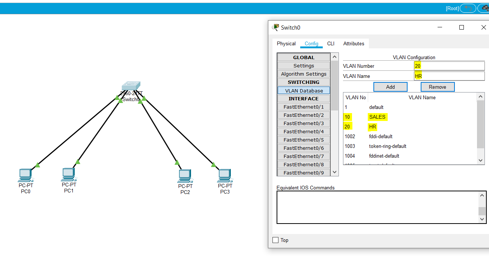
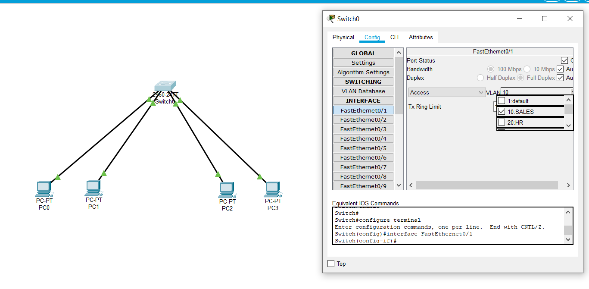

VLAN is a custom network which is created from one or more local area networks. It enables a group of devices available in multiple networks to be combined into one logical network.
VLAN Configuration Steps:
Create VLAN Number
Create VLAN Name

Choose an interface of switch.
Configure interface (ACCESS / TRUNK).
Link interface with VLAN.

VLAN can also be configured using followig command in CLI tab: